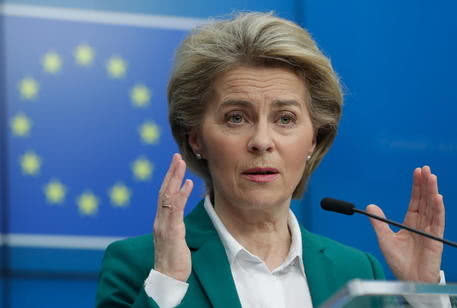
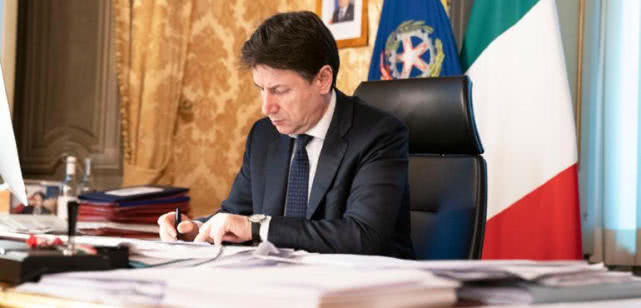

疫情爆发一月整，家门前的“西欧动脉”停止了流动
原文链接 备份链接 记者 | 王磬 “ 仍然受到公民隐私、个人自由、公私域边界等“制约”的欧洲政府，危机之下显得笨拙、吃力、蹑手蹑脚，像是一个行动迟缓的老人，坚守着一套旧世界的标准，却早已被新世界的浪潮甩在身后。 ” 我在阿姆斯特丹的家门 …
欧盟是怎样援助意大利抗疫的？
最近有好几个网友问我，大致的意思都是：意大利已经这么惨了，怎么没看见欧盟帮助意大利呢？
答复如下:
1.现在疫情已经在整个欧洲蔓延开来，欧盟启动了370亿欧元增援欧盟成员国的医疗系统，扶助受到疫情打击的企业和劳动者。意大利作为疫情最严重的欧盟成员国，自然是该项目受益国之一。
2.欧盟在欧洲疫情爆发之初已立即决定祭出1200亿欧元，随后又立即补充7500亿欧元（一共8700亿欧元），为保护欧盟国家不因突发疫情被公共债务击垮。意大利作为疫情最严重的欧盟成员国，是该项目首当其冲的受益者。
3.欧盟已决定投入8000万欧元用于新冠病毒疫苗开发。
4.欧盟已启用10亿欧元作为保证金，鼓励银行为中小企业贷款，已促成10万个企业的80亿欧元贷款。
5.欧盟已禁止成员国医疗物资出口至欧盟以外的国家，以确保这些物资留给欧盟成员国公民使用。
6.欧盟委员会与口罩和医疗防护装备商家协商，尽快提高生产量能，加快产品的欧盟CE认证进度，加快交易手续和物流速度。
7.3月中旬，针对所谓“德国扣住意大利进口口罩”事件，欧盟委员会出面疏解，并警告德国，扣其他成员国防疫物资会遭受罚款。欧盟促进成员国之间医疗应急物资的共享和流通，德国和法国在欧盟的督促下，解除了医疗物资（口罩、防护服和护面镜）的出口禁令（欧盟以外其他国家仍不允许出口，只允许出口至欧盟成员国）。德国政府向意大利运送了100万只口罩，法国总统马克龙也宣布援助意大利100万口罩和几万件防护服。欧盟委员会主席冯德莱恩说，“禁止向其他成员国出口医疗物资是有害的。没有一个成员国可以独自生产一切所需。现在意大利的情况最紧急，需要最大量的医疗物资，过几个星期将会是其他成员国有这个需求。”

欧盟委员会主席乌尔苏拉·冯德莱恩
8.欧盟已创立一个医疗物资应急保障库，从呼吸机到未来会研发出的疫苗。
9.欧盟委员会决定暂停稳定与增长协议，以确保每个成员国能视本国疫情具体情况而决定拨出多少财政支出，在一定的可控范围内即可，不必死守赤字对GDP的占比。正常情况下，依照稳定与增长协议，欧盟成员国财政赤字不能超出本国GDP的3%，公共债务不能超过GDP的６０％，一国财政赤字若连续3年超过该国GDP的3%，该国将被处以最高相当于其GDP之0.5%的罚款。暂停稳定与增长协议首个受益国就是意大利，如若欧盟不做出这个决定，孔特政府就无法签下高达２５０亿欧元的经济纾困法案（法案具体内容，请参阅文末附文），意大利普通家庭和中小企业也就很难度过这个二战以来最大的难关。
（注：稳定与增长协议是欧盟27个成员国共同签订的，目标是保障经济货币联盟稳定的协定，条文主要化为《欧盟运作条约》（2008年5月9日版）第121条和第126条之规定，包括欧洲联盟委员会对成员国财政的监督机制，以及对违约成员国在警告后的制裁机制。）
10.欧盟投入1亿6400万欧元鼓励科技企业开发因应疫情的创新产品。
11.欧盟决定投入1亿3750万欧元用于医学科学研究，并已启动4750万欧元，涉及到全欧洲136个科研小组。另外9000万欧元作为储备，将与制药工业一起研发新药。
以上内容并未囊括欧盟的全部援助举措，只是其中主要的部分。

意大利总理孔特签署经济纾困法案
附文：意大利总理孔特3月16日上午签署的意大利防疫纾困法案，针对中小企业和普通家庭的财政扶助举措如下：
一线防疫医护和工作人员将在工资之外得到额外补偿;
有子女需要照顾的一线医护人员，可获得1000欧元的保姆费补助。
疫情导致的失业者可延缓支付房贷（必须是个人购买的第一栋房产）18个月;
政府发放更多失业救济保障金，以保障因疫情失业的劳动者及其家庭的基本生存;
年营业额在200万欧元以内的企业可延缓缴纳增值税和各项杂税。受疫情波及最大的行业（旅游、交通、影院、职业体育、博览会等）企业延缓缴纳增值税和各项杂税;
因疫情停止运营的企业，其员工可得到9个星期的工资补齐（即企业支付一部分，政府支付一部分）；
所有在3月持续工作、但年总收入低于4万欧元的劳动者可获得每人100欧元补助；
12岁以下孩童的父母可请15天半薪假在家照顾孩子，需要继续工作的父母出示正式保姆合同，即可获得600欧元的保姆补助。
免责声明
本文来自腾讯新闻客户端自媒体，不代表腾讯新闻的观点和立场。
原文链接 备份链接 记者 | 王磬 “ 仍然受到公民隐私、个人自由、公私域边界等“制约”的欧洲政府，危机之下显得笨拙、吃力、蹑手蹑脚，像是一个行动迟缓的老人，坚守着一套旧世界的标准，却早已被新世界的浪潮甩在身后。 ” 我在阿姆斯特丹的家门 …
原文链接 备份链接 在欧洲人的眼中，没有病症的人戴口罩出门好比穿病号服逛街。 文 | 周 顺 瑞士是和意大利交界边境线最长的国家，从意大利2月21日第一起病例出现，瑞士意大利语区的提契诺州（Ticino）就有民众呼吁关闭边境，但截至3 …
原文链接 备份链接 体坛周报全媒体驻德国记者 杨子江 德国总理默克尔昨天做了全国性的电视演讲，这是她上任以来的第一次电视演讲（除了每年的新年讲话之外）。外界普遍认为，默克尔目前面对的危机，远远大于2015年难民危机，因为欧盟内部发出“破裂 …
原文链接 备份链接 体坛周报全媒体驻意大利记者 陈硕麟 昨天意大利驻华使馆在微博上发了一条向中国民众募捐的呼吁，但评论区却炸了锅，在大量的负面评论中，这条动态已经被删除。 我昨天在翻看这条微博的时候，最高赞的评论是一张新闻截图，内容是意大 …
原文链接 备份链接 图虫 特约作者：钱伯彦 “ 多边协商与交流曾是欧盟立足于充满矛盾的世界上的最大招牌，但在大难临头之际这块招牌却不见了。 ” 一方面是搭载着31吨医疗物资和医护人员的外援飞机降落在意大利罗马菲乌米奇诺机场，另一方面则是同 …